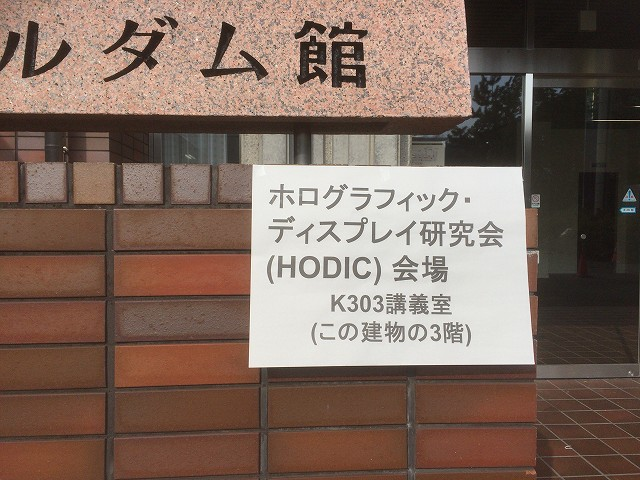
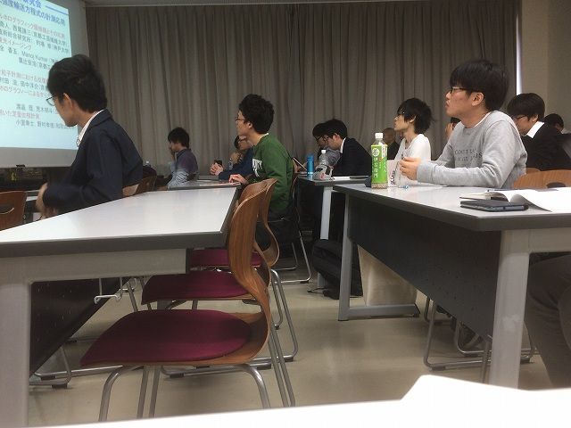
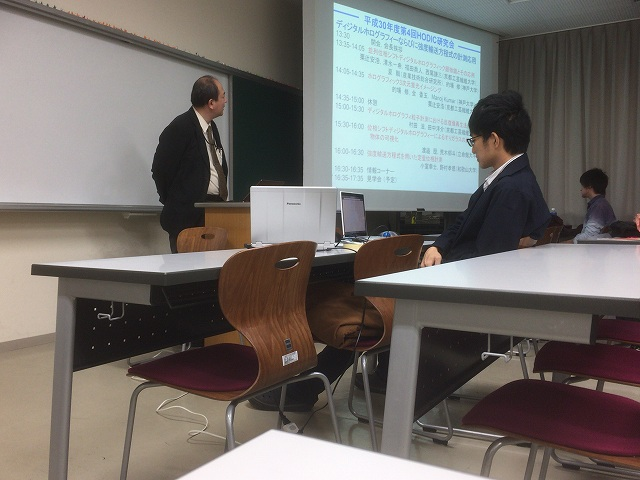
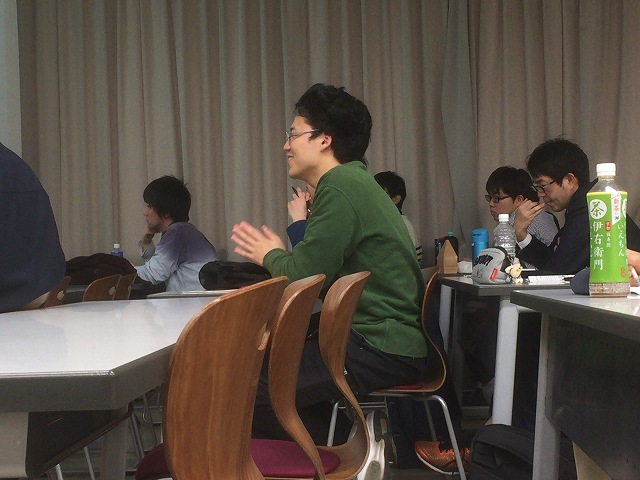
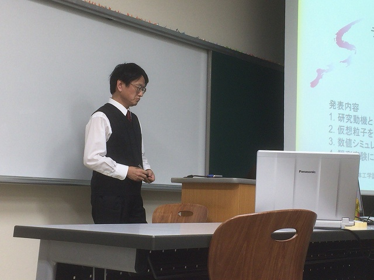
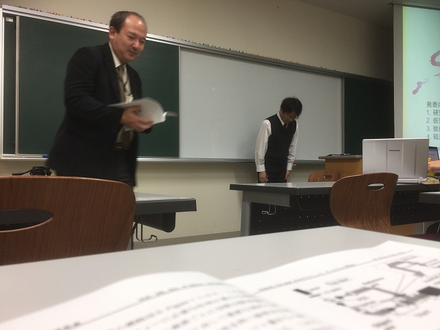
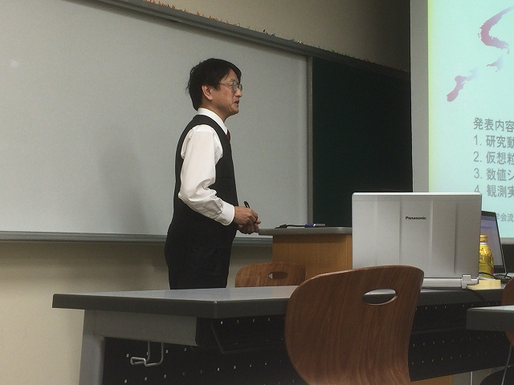
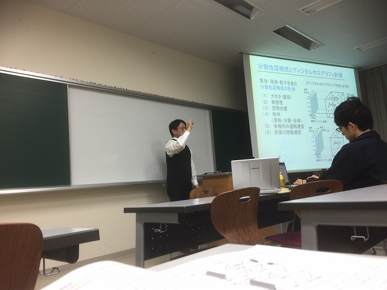

| ・ ホログラフィック・ディスプレイ研究会 (H30.11.30) | |||
3年前に助教の人が発表した研究会から、ホログラフィック・ディスプレイ研究会 にて村田先生が「ディジタルホログラフィ粒子計測における反復像再生法」 という題目で発表されました。あれから光計測のテーマの人は日本光学会で発表しています。 |
|||
|

学内のノートルダム館 |

ホログラム関係は全員参加 | ||
|

粟辻先生の司会 |

B4M四さん | ||
|

村田先生のご発表 |

紹介 | ||
|

微粒子計測のホログラフィとは |

質疑応答 | ||